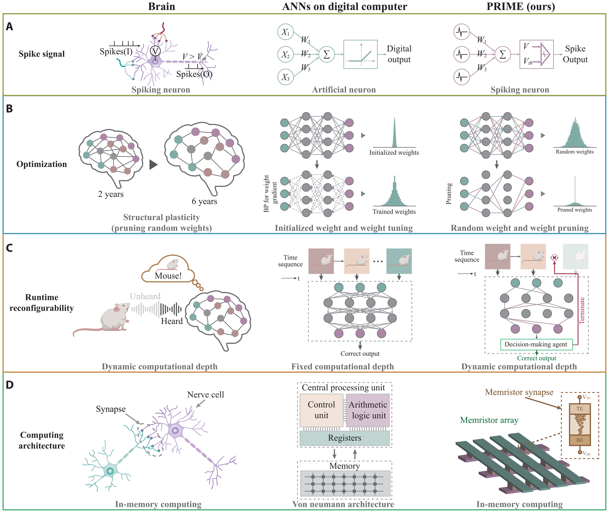
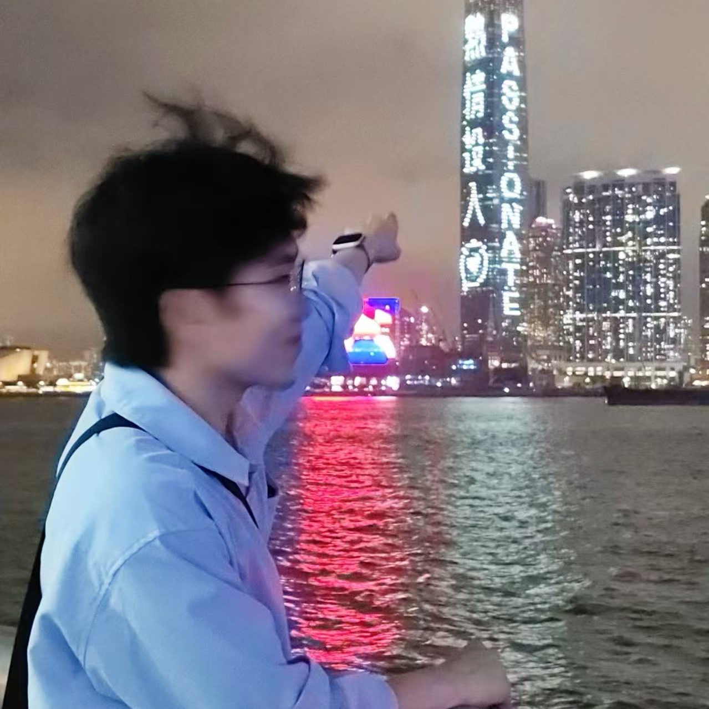

PRIME
Dynamic Memristive SNN

I am a Ph.D. student at Southern University of Science and Technology (SUSTech) , Shenzhen, China. Before joining SUSTech, I received my M.Sc. degree in Electrical and Electronic Engineering from The University of Hong Kong (HKU) and my B.Eng. degree in Information and Communication Engineering from UESTC .
My research focuses on high-rate visual perception for dynamic and embodied systems . I am particularly interested in combining conventional RGB cameras with event cameras to overcome the temporal limitations of frame-based vision, enabling accurate perception at arbitrary timestamps between consecutive RGB frames.
My current interests include event-based vision, dense prediction, semantic segmentation, monocular depth estimation, and efficient embodied perception for autonomous vehicles, drones, and robotics.
